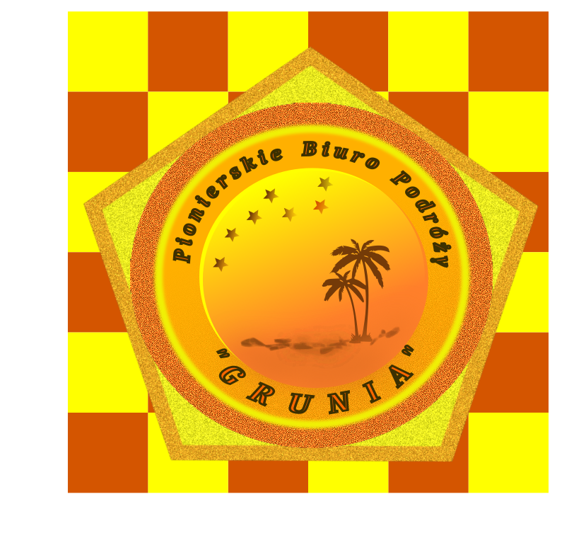
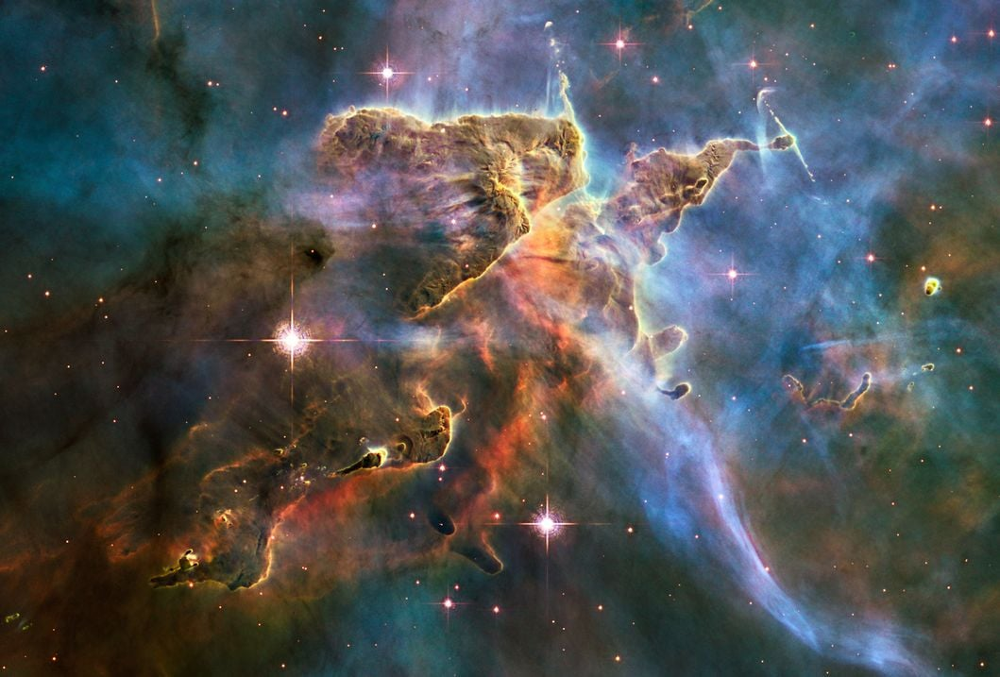
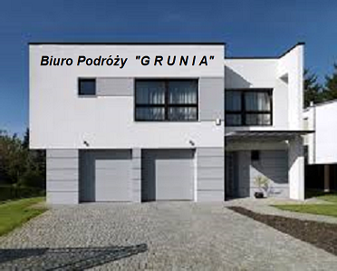
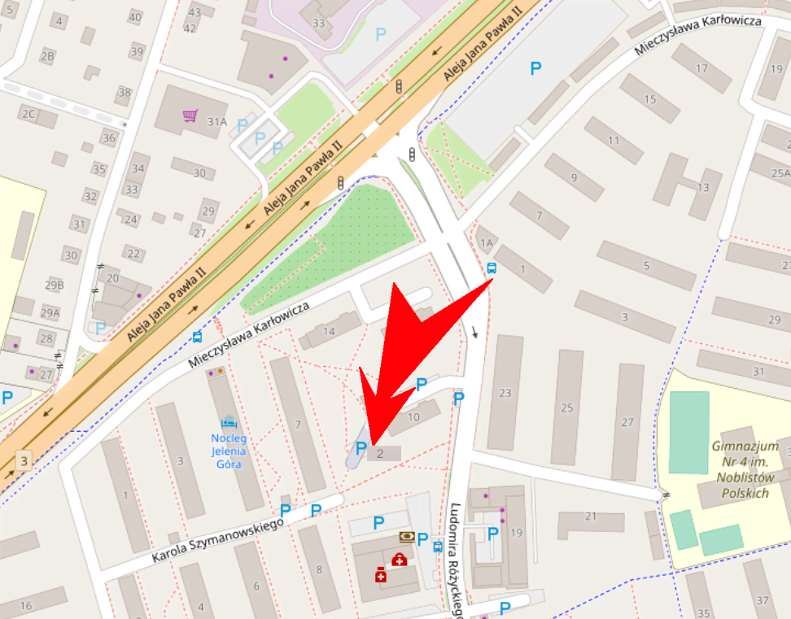

Twoja obecność na tej stronie wskazuje, że wszystkie dotychczasowe informacje, zostały sumiennie łyknięte i zdrowo strawione. Wiesz więc, że "GRUNIA" może wszystko!! Zapewniamy CIEBIE, że ani Jacques-Yves Cousteau, nie podglądałby niezdrowo - jako pierwszy! - rybek na głębokościach 500 m, ani Edmund Hillary z Szerpą Norgayem Tenzingiem, nie pałaszowaliby - jako pierwsi! - czekolady firmy "22 Lipca - d.E.Wedel" na szczycie Mount Everest, gdyby nie "GRUNIA"!! Zdobyte tam doświadczenia, pozwoliły FIRMIE utorować drogę do osiągnięcia "Korony Ziemi" takim alpinistom jak: Richard Bass, Gerry Roach, Reinhold Meesner

i innym! To również dzięki NAM, teleskopy Hubble'a i Keplera, znalazły się tam, gdzie się znalazły. Powszechnie doceniany profesjonalizm FIRMY, uchronił też teleskop Jamesa Webba przed jego kosmiczną anihilacją w Czarnej Dziurze. Dzięki tym - i jakże nowatorskim! - działaniom, staliśmy się prekursorami innowacyjnych perspektyw turystycznej eksploracji Wszechświata. Tak więc obok w zarysie, udostępniamy Tobie widok końcowego stadium przygotowawczego, jednego z rozważanych kierunków na tym polu - czy Czarna Dziura ma dno? Od CIEBIE więc teraz tylko zależy, jak wysoko dasz się unieść swoim MARZENIOM!! Bo potem, to już "GRUNIA" zadba o TWOJE bezpieczne lądowanie. Pora dać więc NAM szansę!! A wrażenia, jakie z niej wyniesiesz, zwiążą CIEBIE z "GRUNIĄ" już na zawsze!! Oczywiście, jeśli Czarna Dziura NAS wypluje!Nasz adres internetowy:
www.grunia.com
Nasz adres e-mail:
grunia@birne.pl

